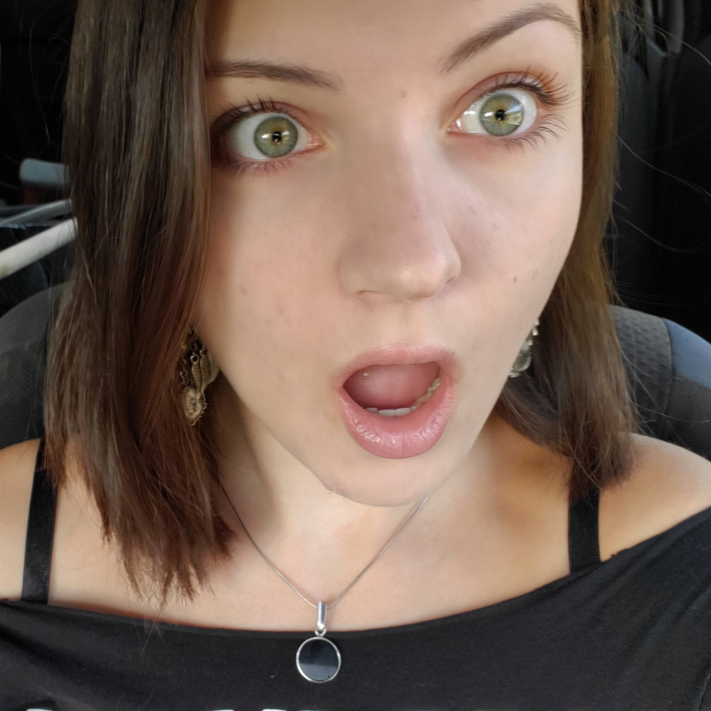

Повече за мен

Казвам се Бранимира и съм ученичка със страст към технологиите и програмирането. Още от ранна възраст проявих интерес към компютри, а днес обичам да създавам уеб сайтове и да се уча как работят програмите отвътре.
Освен програмирането, се интересувам от дизайн, логика, изкуствен интелект и нови технологии. Участвам в различни проекти и обичам да работя както индивидуално, така и в екип. Мечтая един ден да стана софтуерен инженер и да помагам на хората чрез технологии.
Хобита и интереси
- 👩💻 Програмиране
- 📚 Четене на книги
- 🎵 Музика
- 🧩 Логически пъзели и судоку
- 🌍 Учене на чужди езици